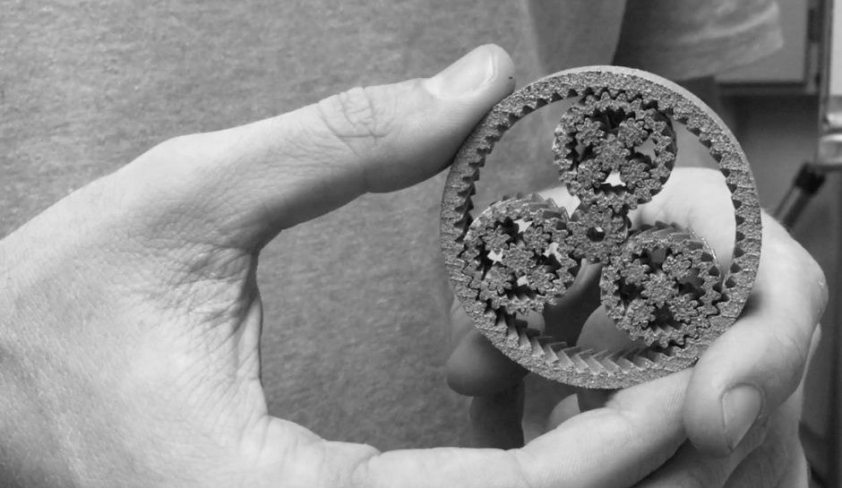

/mechanical_design
(12_april_2022)
The week before the holidays began with a class on mechanics at FabAcademy. In my case, I was in
Mallorca on a research trip but still, it was more of a revision of what I learnt years ago since
I already studied (and on some occasions struggled) with mechanical principles and applications.
They talked about degrees of freedom and the movements they would produce: rotation, translation or
both. Depending on the joints and the restrictions we set, we would be able to predict the movement
we want for a mechanism easily or with more effort.

Secondly, they analysed more deeply the different kinds of movement some components can produce
(bearings, pistons, sliders, etc.) and talked about gears, figuring out their functionality and
general applications for each kind. Personally, I'm interested in 3D printed planetary gears, which
are formed directly in place and that cannot be disassembled.
Finally, they also had a brief explanation of belts and chains, how they transmit the movement
in many various ways, and saw some more examples of mechanisms used in real applications.
.hug_me_not
This week's task consisted of creating a machine. For MDEF students, we already designed a machine during the first term of the master's, for the course "Almost Useless Machines". There, we designed a machine that barely hugged people, creating a weird feeling of emptyness. You can see the project by tapping here.